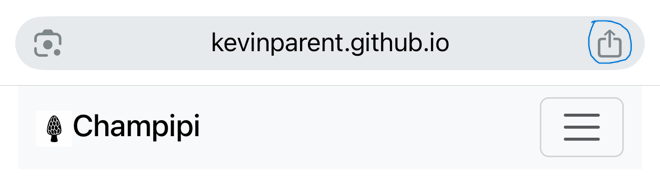
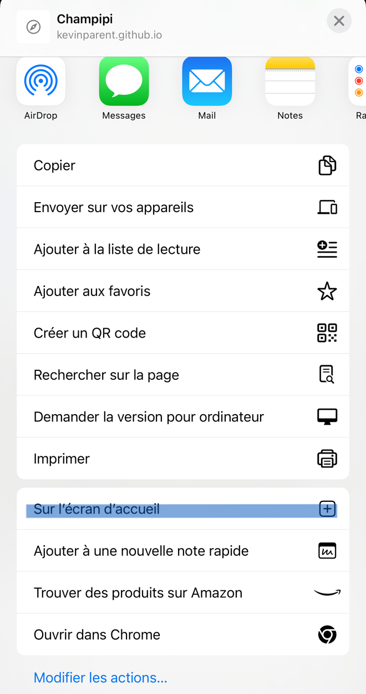

Aide et conseils
Comment utiliser la recherche
La recherche vous permet de trouver des champignons en fonction de leur description.
Par exemple, si vous cherchez un champignon avec un chapeau rouge, vous pouvez taper "Rouge" dans le champ de recherche et sélectionner "Chapeau" dans le menu déroulant.
Vous pouvez également combiner plusieurs critères de recherche pour affiner vos résultats en séparant les mots par des virgules
(ex: "Rouge, strié" pour trouver des champignons avec un chapeau rouge et strié).
Vous pouvez également exclure de la recherche certains mots en le précédent d'un Point d'exclamation ce qui excluera de la recherche les critères contenant ce terme.
(ex: "Rouge, strié, !méchuleux" pour trouver des champignons avec un chapeau rouge et strié et dont le terme méchuleux n'apparait pas dans la recherche).
Vous pouvez élargir votre recherche en utilisant le mot OU entre les mots pour rechercher des champignons qui contiennent l'un ou l'autre des mots
(ex: "Rouge OU jaune" pour trouver des champignons avec un chapeau rouge ou jaune).
Vous pouvez également combiné ces types de recherche pour afficher votre recherche.
Par exemple, "Rouge OU jaune, strié, !méchuleux" pour trouver des champignons avec un chapeau rouge ou jaune, strié et dont le terme méchuleux n'apparait pas dans la description.
Nous vous donnons l'exemple avec seulement le chapeau, mais vous pouvez faire de même avec les autres critères de recherche et les combiner entre eux.
Bon à savoir
La recherche utilise un dictionnaire de synonymes pour vous aider à trouver les champignons que vous cherchez.
Par exemple, si vous tapez "Rouge", la recherche inclura également les champignons qui ont un chapeau de couleur "Cramoisi" ou "Vermillon".
Si vous souhaitez ajouter des nouveaux synonymes, n'hésitez pas à nous le faire savoir. Vous pouvez voir la liste actuelle sur la page synonymes.
La recherche permet aussi une petite flexibilité sur l'ortographe, par exemple, si vous tapez "Rouge", la recherche inclura également les champignons qui ont un chapeau de couleur "Rouge" ou "Rougeâtre".
Mes Observations
Vous pouvez ajouter vos observations depuis la page de recherche. L'application persistera votre position et la date de l'observation.
Vous pourrez ensuite revoir vos observations sur la page "Mes Observations" et les repérer sur une carte!
Source des données
Les données utilisé sur l'application proviennent du web et les descriptions ont été généré grâce à l'intelligence artificielle.
La recherche s'appuie sur le dictionnaire de données et non pas sur l'intelligence artificielle. Si vous notez des erreurs dans les descriptions ou des informations qui vous semblez erronées, n'hésitez pas à nous le faire savoir.
Ajouter à l'écran d'acceuil de votre téléphone
Vous pouvez ajouter l'application à l'écran d'accueil de votre téléphone pour y accéder plus facilement. Pour cela, ouvrez le menu de votre navigateur et sélectionnez "Ajouter à l'écran d'accueil".
iPhone
Étape 1

Étape 2
